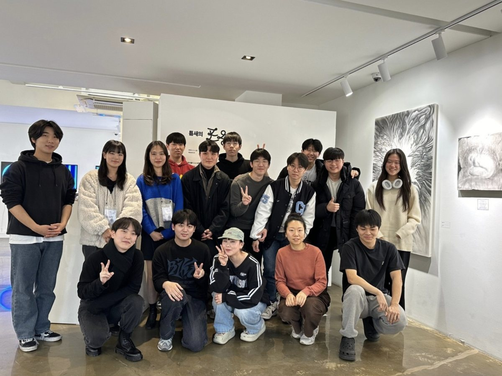
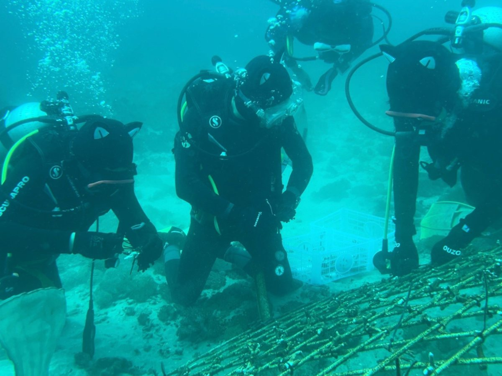
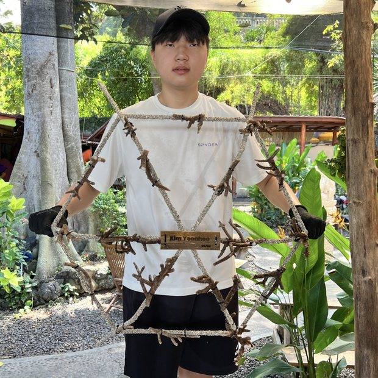
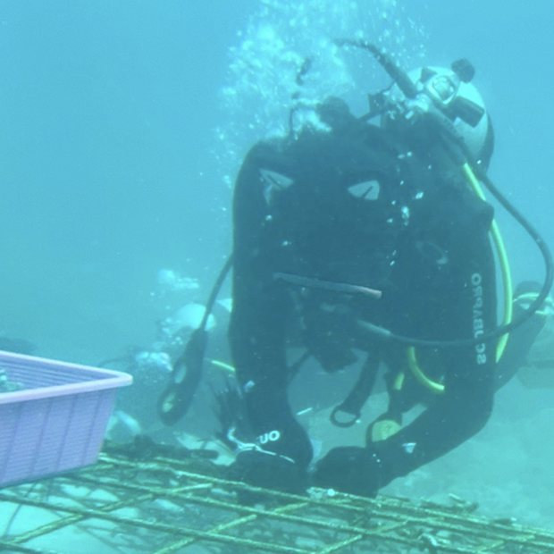
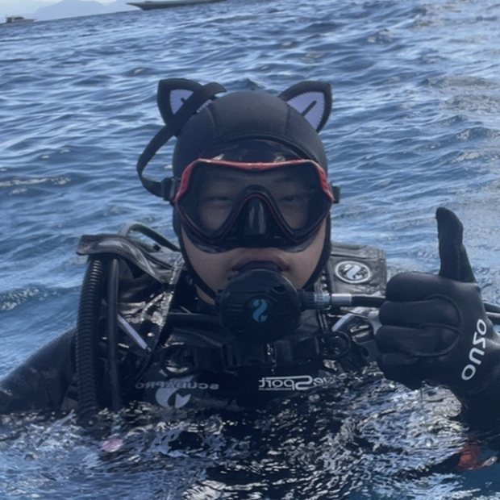
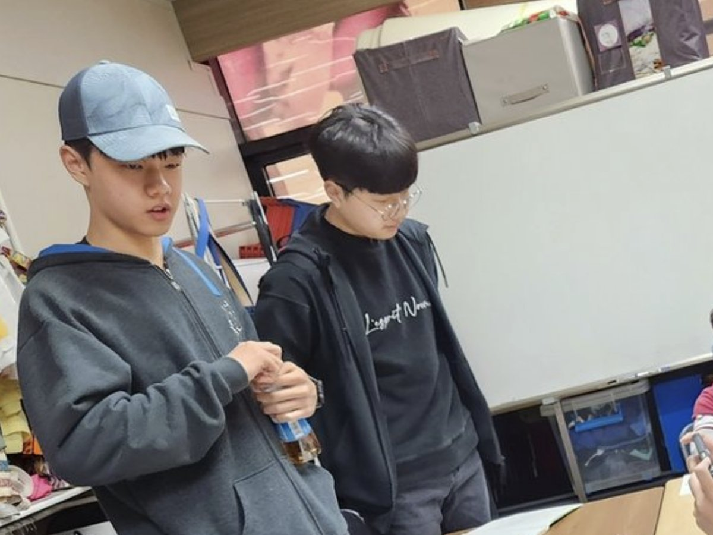
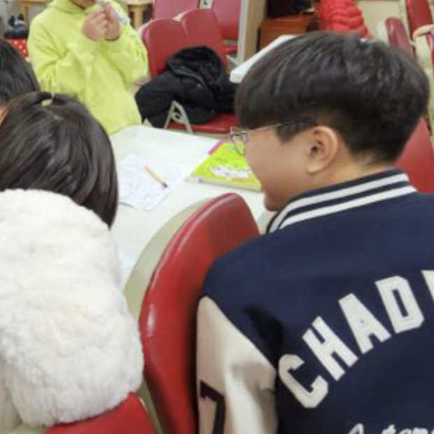

Understanding the community around me and creating positive changes. Four leadership roles, one organisation I started in Grade 9 and still run, and a Silver Award at the National Youth Volunteer Awards.
Entry 4.1 · Grade 10 — present · Member in Grade 10, Leader from Grade 11 National Youth Volunteer Awards, Silver Award · Grade 11
Chadwick International Culture Protectors
A club dedicated to protecting, promoting and sharing the rich culture and history of the Republic of Korea.
We organise monthly volunteer work at the Wongaksa soup kitchen and plogging in Tapgol Park.
We have also collaborated with the Korea Heritage Service on events aimed at foreigners inside and outside the school community — creating posters, running sessions introducing Nakseonjae, and similar work to promote Korean heritage.
In October 2025 I served as an English docent at the 11th Palace Culture Festival, Nakseonjae: 100 Years of Time and Scenery, and was given a letter of appreciation by the Korean Imperial Family Culture Institute for the role.
The Silver Award at the National Youth Volunteer Awards in Grade 11 came out of this work.
Founded in Grade 9 and still running. Using food as a language for culture.
I started Taste of Songdo to use food as a language for culture.
It runs an annual kimchi-making event for ninth graders, which has become a tradition, and experimental cooking sessions over the summer break for newly arriving foreign teachers and returning teachers at our school. We also run a cooking session for students coming on exchange from Chadwick’s Palos Verdes campus.
Alongside the events I manage an Instagram page introducing local restaurants and food stories for foreigners living in the Songdo area of Incheon.
Entry 4.3 · Grade 9 — present · Member in Grades 9 to 11, Co-Leader in Grade 12
US Pushcart Library
Teaching sessions and events for village schoolers.
We organise teaching sessions for more than twenty high school students, and events for village schoolers aimed at encouraging fun learning and a supportive environment.
The project I liked most was collaborating with twenty-five Grade 3 students to create audiobooks for the blind.

Entry 4.4 · Grade 9 — present · Member in Grades 9 and 10, Leader from Grade 11
Beyond the Border
Support for vulnerable communities in Korea, with the Sun Blanket Foundation.
We collaborate with the Sun Blanket Foundation to provide support for vulnerable communities within Korea, among them talented young artists who are orphans.
We have raised over $2,000 in donations, in two months.
The council organises an annual event for village schoolers to learn and embrace the school’s core values: responsibility, respect, compassion, honesty, and fairness.

Planting on the nursery frames, Padang Bai.



Entry 4.6 · Grades 9 and 10 · Head Member
Bali Coral Restoration Trip
An annual trip to the Padang Bai area of Bali.
An annual trip to Bali to restore coral for positive marine environmental impact. We planted coral reefs and cleaned the ocean floor in the Padang Bai area.
As head member I helped run the programme, working with local operators and public safety officials to get each trip in the water.
I certified as a CMAS One Star diver before the first trip, in Grade 9, with two friends who came along — that certification is in Room 06.

Making pens at a Hwarang session.

Entry 4.7 · Grade 9 · City of Los Angeles Recognition for Service
Hwarang Youth Foundation
A service club. Recognised by the City of Los Angeles.
We made ball point pens alongside elderly people in economically poor areas, taught basic school subjects to multicultural children, and taught instruments — piano and drums — to children supervised by public schools after school hours.